Data Catalogue¶
The Data Catalogue is organised into thematic categories, each holding datasets relevant to the Limpopo River basin: Natural Basin Characteristics, Socio-Economic Profile, Water Resources, Ecosystems and Satellite Images.

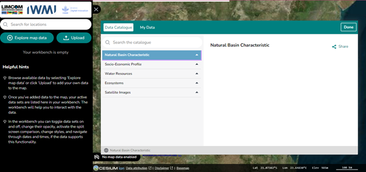
For what each category contains, see Dataset Themes.
Searching the catalogue¶
Use Search the Catalogue to find a specific dataset by name. This gets you to data of interest quickly, without walking the whole category tree.
Previewing and adding data¶
Selecting a dataset opens a Data Preview panel with a short description and the option to add the dataset to the map. Taking "Soil maps" under Natural Basin Characteristics as an example, the preview gives you:
- Dataset description — the significance of the dataset, including its relevance to sustainable land management and conservation efforts.
- Add to the Map — visualise the dataset directly on the map.
- Service contact — contact information for further enquiries about the dataset.
- GetCapabilities URL — a URL for integrating the dataset into other GIS software.
- DOI and data source — the dataset's origin, including a DOI for citation and the primary data provider.

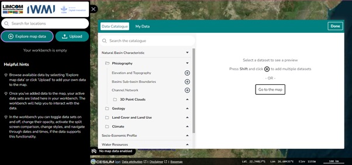

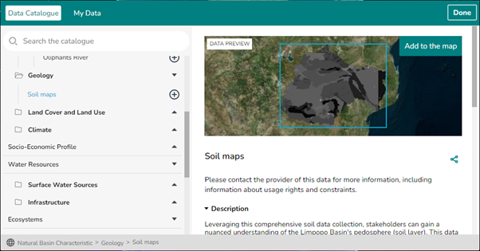

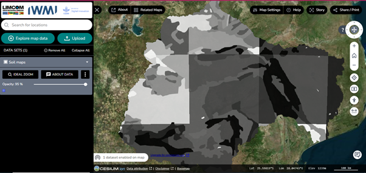
About Data
The About Data icon returns you to the data catalogue page and shows the information about the dataset currently displayed.
Navigating the data¶
Once a dataset is added to the map it appears in the Workbench for further manipulation. From there you can adjust visibility and opacity, and compare datasets. The platform supports both 2D and 3D visualisation, depending on the dataset.

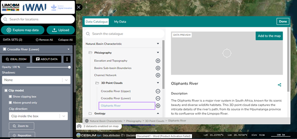
3D dataset tools¶
Point-cloud and other 3D data carry extra controls:
- Shadows — cast only, receive only, or both cast and receive.
- Clip Model — clip the data inside or outside a box, zoom to the box, and reposition it.

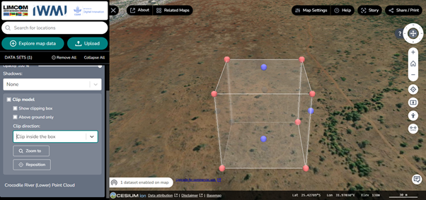
The Feature Information icon¶
Feature Information reports the details behind a specific point on the map, and lets you export them.

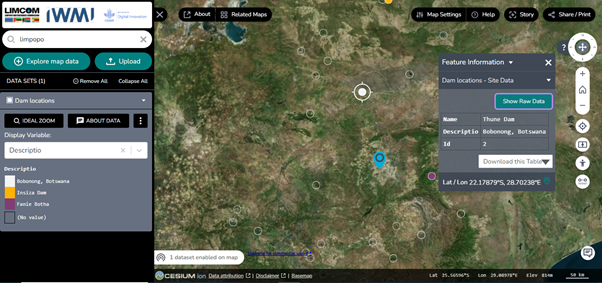
For the dam locations example, the panel gives you:
- Dam Locations — Site Data — information about specific dam sites.
- Data download options — download the data table as CSV or JSON.
- Show Raw Data — view the unprocessed data.
Styling a dataset¶
The display variable control in the Workbench lets you style and customise how a dataset is drawn. For finer control, click the three-dot icon, choose Edit Style, and click Done when you have finished.

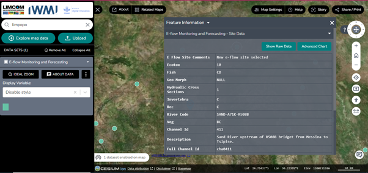

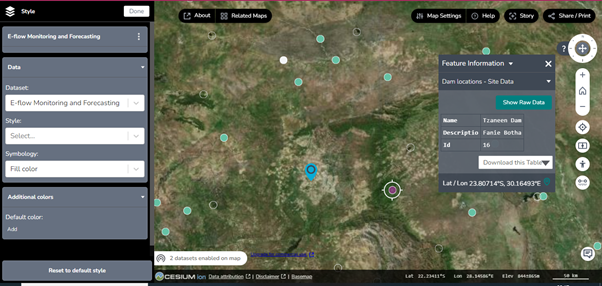
Charts and time series¶
Datasets with a temporal dimension can be charted. Select a start and end date to restrict the chart to a period of interest.

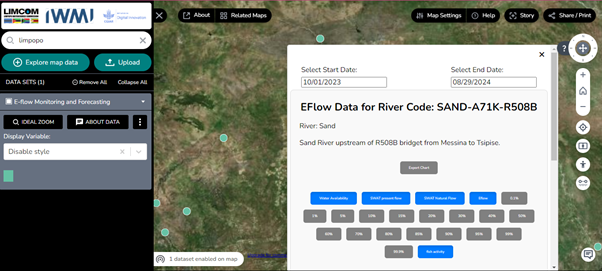

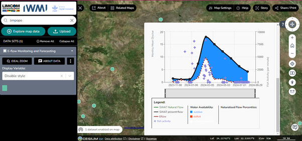
Hovering over a point on the curve reveals the values behind it. For the E-flow dataset these attributes are:
| Attribute | Meaning |
|---|---|
| Availability Surplus | The amount or unit of surplus available |
| Deficit | The shortfall or lack of data |
| SWAT Present Flow | The flow data from the SWAT model |
| E-Flow | The environmental flow data |

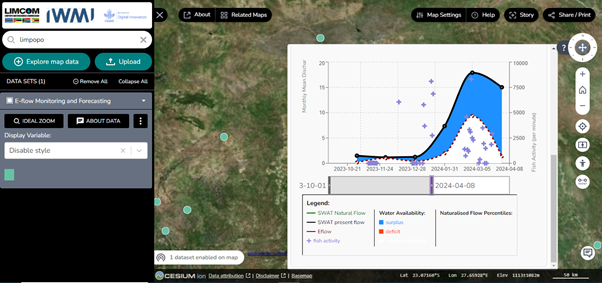